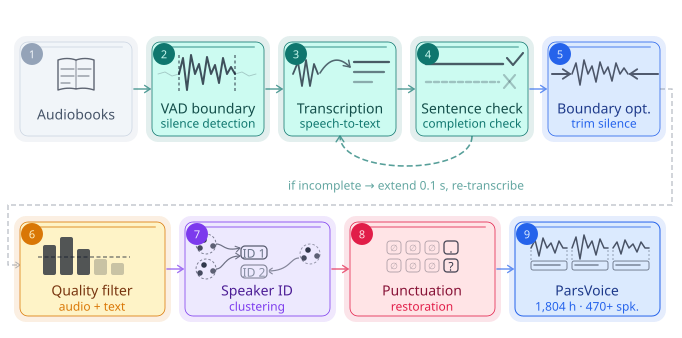

The largest open Persian speech corpus, with zero-shot voice cloning
@inproceedings{ranjbar2026parsvoice,
title={ParsVoice: A Large-Scale Multi-Speaker Persian Speech Corpus for Text-to-Speech Synthesis},
author={Ranjbar Kalahroodi, Mohammad Javad and Shakery, Azadeh and Faili, Heshaam},
booktitle={Proceedings of the 2026 Conference on Empirical Methods in Natural Language Processing (EMNLP)},
month={oct},
year={2026},
address={Budapest, Hungary},
publisher={Association for Computational Linguistics},
url={https://aclanthology.org/2026.emnlp-main.2458/},
doi={10.18653/2026.emnlp-main.2458},
pages={55804--55819}
}
@article{ranjbar2025parsvoice,
title={ParsVoice: A Large-Scale Multi-Speaker Persian Speech Corpus for Text-to-Speech Synthesis},
author={Ranjbar Kalahroodi, Mohammad Javad and Faili, Heshaam and Shakery, Azadeh},
journal={arXiv preprint arXiv:2510.10774},
year={2025}
}Existing Persian speech datasets are typically far smaller than their English counterparts, which limits Persian speech technology. ParsVoice addresses this with an automated pipeline that turns raw audiobook recordings into TTS-ready data — a BERT-based sentence-completion detector, a binary-search boundary-optimization step for precise audio-text alignment, and audio-text quality assessment tailored to Persian.
The pipeline processes 2,231 audiobooks into 4,096 hours of segmented speech. Quality filtering keeps 3,008 hours, and the final TTS-ready subset has 2,200 hours (1.36 million segments) from 1,815 automatically inferred speaker IDs. Fine-tuning XTTS on this data reaches a naturalness MOS of 3.6/5 and a speaker-similarity SMOS of 4.0/5 — comparable to major English corpora, and openly released to accelerate Persian speech research.

Zero-shot clones from the fine-tuned model, next to the unseen reference voice each was cloned from.
Loading samples…